Students Settle In - 0:00 to 0:10
Students arrive to class, find their seats and get ready for class.
Class Introduction - 0:10 to 0:30
Umer introduces goals for today's class and reviews some class reminders for upcoming dates.
- Students were well aware of the agenda for the class
Keywords: certainty - Important dates were discussed
Keywords: fairness - Umer pointed class to quizes and exercises in Blackbaord
Keywords: fairness, certainty, technology - Informed students of a VR talk tomorrow
Keywords: technology, intrinsic motivation - Before class sent an email regarding a video to watch before class
Keywords: technology, flipped classroom

Assignment Review - 0:10 to 0:30
Leonhard reviewed previous assignments.
- Gave general feedback regarding a recent assignment
Keywords: status, transmission - Delivery was harsh, to the point but friendly and humourous
Keywords: humour

Class Lab Time - 0:30 to 1:45
Umer gave students lab time to work on projects.
- Spent remainder of the class time helping students with assignment questions
Keywords: relatedness - Umer has two peer tutors mostly running the time to work on assignments
Keywords: growth mindset
Takeaway:
After visiting Umer's class I now have a peer tutor in my coding classes and it has been a huge help!
Critical Thinking - 0:30 to 1:40
Leonhard presented photos of completed melas and the class critiqued.
- Professor used a stopwatch to time each photo
Keywords: fairness - Handed out assignments while students were reviewing photos, good use of time
Keywords: extrinsic motivation - After students review photos, chef reviewed them
Keywords: activate prior knowledge<

New Content Lecture - 0:50 to 1:10
Reviewed the history of food presentation.
- Presented using PowerPoint
Keywords: technology, transmission - Handout with questions that followed lecture
Keywords: fairness

Break - 1:10 to 1:20
Students were given a ten minute break.
New Content Lecture Continued - 1:20 to 1:40
Reviewed the history of food presentation.
- Continued the lecture with slides and handouts
Keywords: technology, transmission - Spent break time connecting with students
Keywords: relatedness
Lecture Video - 1:40 to 2:00
Watch a video to compliment the lecture.
- Watch a video from YouTube
Keywords: technology - Paused video to discuss plate presentations
Keywords: transmission
Class Recap - 2:00 to 2:30
Finished class with a recap.
- Asked students the top things to remember, students provided lots of answers
Keywords: fairness - Handed out a recap document
Keywords: fairness
Class Closing - 2:30 to 2:40
Finished the class with time for questions and feedback.
- Did a stop, start and continue review
Keywords: relatedness - Not afraid to use self-deprecating humour
Keywords: relatedness - Pointed out a few Blackboard notices
Keywords: fairnes, technology